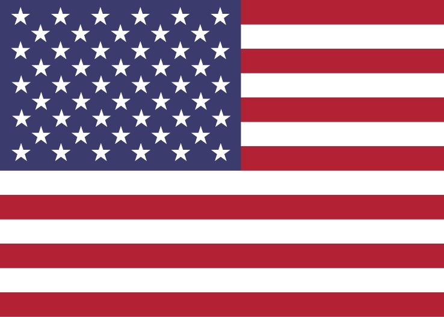

Etats-Unis
Le programme spatial des États-Unis est le programme spatial le plus important financièrement dans le monde.
Avec la Russie et la Chine, les États-Unis sont en 2026 les trois seuls pays au monde à avoir maîtrisé l'envoi d'hommes dans l'espace.
Ce programme a commencé en 1958, pendant la course à l'espace, qui est finie avec les Etats Unis réusissant à etre les premiers et les seuls jusqu'à present a avoir placé un humain sur la Lune.
Les companies
En plus de l'agence du gouvernement, NASA, avec le début du 21eme siècle, des companies privées sont apparus aux EUA, les plus remarquables de nos jours
étant SpaceX et Blue Origin, fondées en 2002 et 2000 par Elon Musk et Jeff Bezos respectivement. SpaceX est connue principalement par avoir maitrisé la récuperation
et réutilisation de ses fusées orbitales. Blue Origin est l'une, sinon la principale companie de tourisme spatiale actuellement.